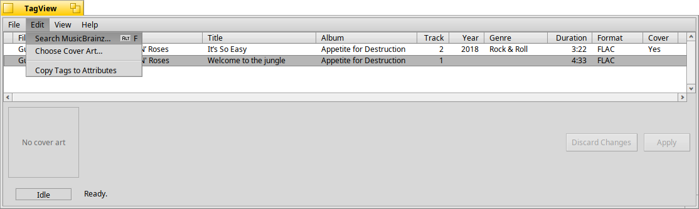

TagAttributes
Copies tags to Haiku file attributes.
#include "tagkit/TagAttributes.h"
Detailed Description
Haiku keeps a copy of a music file's main tags as file attributes: the columns Tracker can show, and what queries search. These functions compare a TagRecord with the attributes on its file and write the tags out as attributes. They use the same set as ArmyKnife:
| Attribute | Type | From |
|---|---|---|
Audio:Artist | string | artist |
Audio:Album | string | album |
Media:Title | string | title |
Audio:Track | int32 | track |
Media:Year | int32 | year |
Media:Genre | string | genre |
Media:Comment | string | comment |
A blank tag (empty text, or a track or year of 0) never touches
the file's attribute: an attribute is added or updated only when the tag has a
value to put there. When an attribute already exists with a different value, it
is replaced (so a shorter value, or one stored as another type, leaves nothing
behind).
The attributes are made from the record, so write the record's tags to the file first if you want the attributes to match what is in the file.

The Edit menu in TagView. Copy Tags to Attributes uses tag_attributes_need_update() to decide whether it is enabled, and copy_tags_to_attributes() when chosen.
Functions
bool tag_attributes_need_update(const TagRecord& record)Whether writing the tags as attributes would change anything. |
status_t copy_tags_to_attributes(const TagRecord& record, int32* written = NULL)Adds the missing attributes and updates the ones that differ. |
Documentation
bool tag_attributes_need_update(const TagRecord& record)
Whether writing the tags as attributes would change anything.
Cheap enough to call when a menu opens, to decide whether to enable a Copy Tags to Attributes command.
Parameters
record- The record, whose
pathnames the file.
Returns
true if at least one attribute would be added or changed. false if the file already has them all, or can't be opened.
status_t copy_tags_to_attributes(const TagRecord& record, int32* written = NULL)
Adds the missing attributes and updates the ones that differ.
Attributes that already match are left alone.
Parameters
record- The record, whose
pathnames the file. written- If not
NULL, set to how many attributes were added or changed.
Returns
B_OK, or the error that stopped it.
src/tagkit.